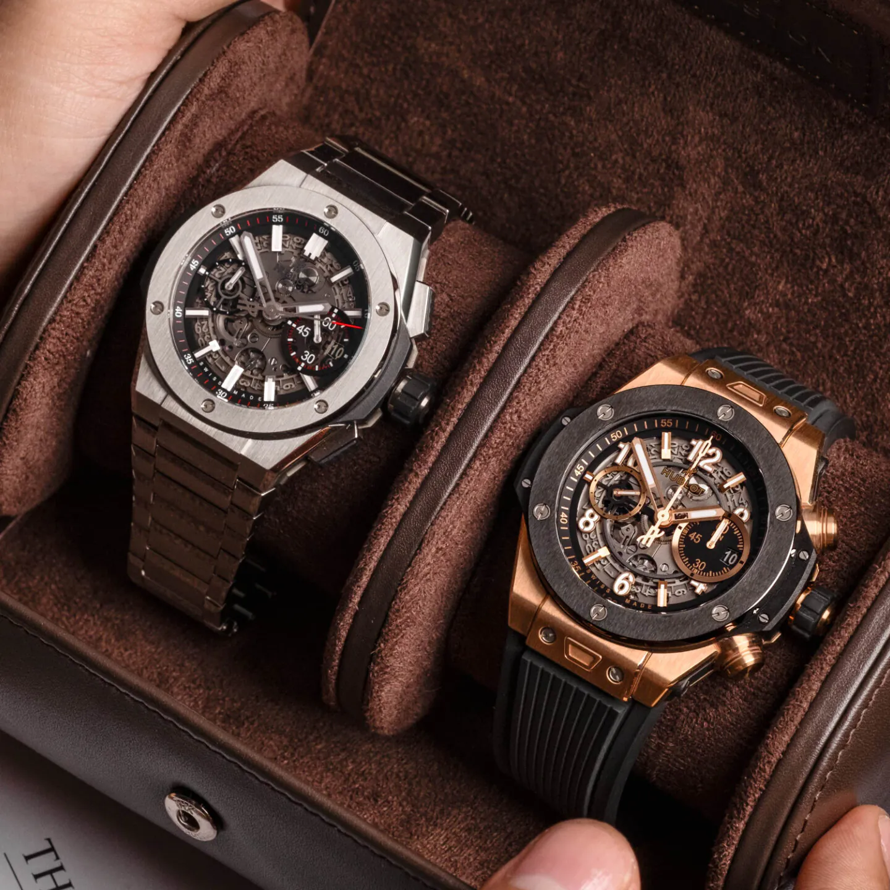

Flagship Model
The Meisterwerk Chronograph
Our flagship masterpiece, the Meisterwerk, combines a classic chronograph complication with a modern, minimalist design. The solid platinum case houses our in-house automatic movement.